成交量分桶熵因子解析與回測
本文整理自興業證券 2022-08-29 發布的研究報告《高頻研究系列四：成交量分布中的 Alpha》，主題是「成交量分桶熵」因子。這個因子在 2024 至 2026 年版《因子日曆》中多次出現，核心概念是用成交量分布的均勻程度，衡量市場在一段期間內的交易不穩定性。
成交量分桶熵（標準差）衡量成交量不穩定性的分散程度。因子值越大，代表個股在近一段時間內的成交量分布越不穩定，價格可能曾經或正在受到知情交易者帶動，整體下行風險也相對較高；若日度成交量分桶熵越大，則日內成交量分布越均勻。
因子計算邏輯
先前這個因子最容易卡住的地方，不是熵本身，而是「怎麼分桶」。整理後其流程其實相當直接：
- 將單日分鐘成交量從最小值到最大值做等距分桶，研究報告預設分成 10 桶。
- 統計成交量落在各桶中的機率分布。
- 根據機率分布計算單日熵值。
- 取近 20 個交易日熵值的標準差，作為最終的低頻因子。
實測上，把桶數改成 5 桶或 20 桶，結果與 10 桶差異不大，因此 10 桶可以視為合理且穩定的預設設定。
Python 範例
def process_single_day(self, idx):
# 載入單日分鐘成交量資料
file_name = self.files[idx]
full_path = os.path.join(self.file_pth, file_name)
vol = BaseDataLoader.load_data(
full_path,
fields=["volume"],
).to_dataframe("volume")
start = vol.min()
step = (vol.max() - start) / 10
bucket_counts = []
for i in range(1, 11):
end = start + step
if i != 10:
flag = (vol >= start) & (vol < end)
else:
flag = (vol >= start) & (vol <= end)
bucket_counts.append(flag.sum())
start = end
prob = pd.concat(bucket_counts, axis=1).T
prob = prob / vol.count()
prob = prob[prob > 0]
entropy = -(prob * np.log(prob)).sum()
entropy.name = pd.to_datetime(file_name.split(".")[0]) + timedelta(hours=15)
return entropy
這段程式的重點如下：
- 前 6 行負責讀入單日分鐘成交量資料。
start取成交量最小值，作為第一個桶的起點。step代表每個桶的寬度。for迴圈逐桶統計成交量筆數。- 機率分布正規化後，依
-sum(p * log(p))計算熵值。 - 最後將日期轉成因子索引，方便後續合併與回測。
因子評估
研究報告以標準差進行降頻。實測比較均值與標準差兩種做法後，標準差版本在 IC 與分層回測上的表現都優於均值版本，因此後續分析以標準差版本為主。
IC 分析
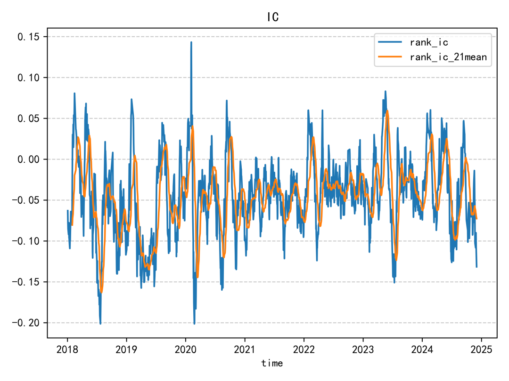
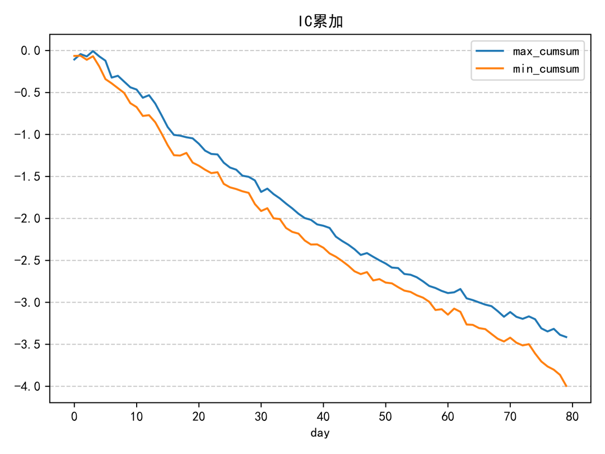
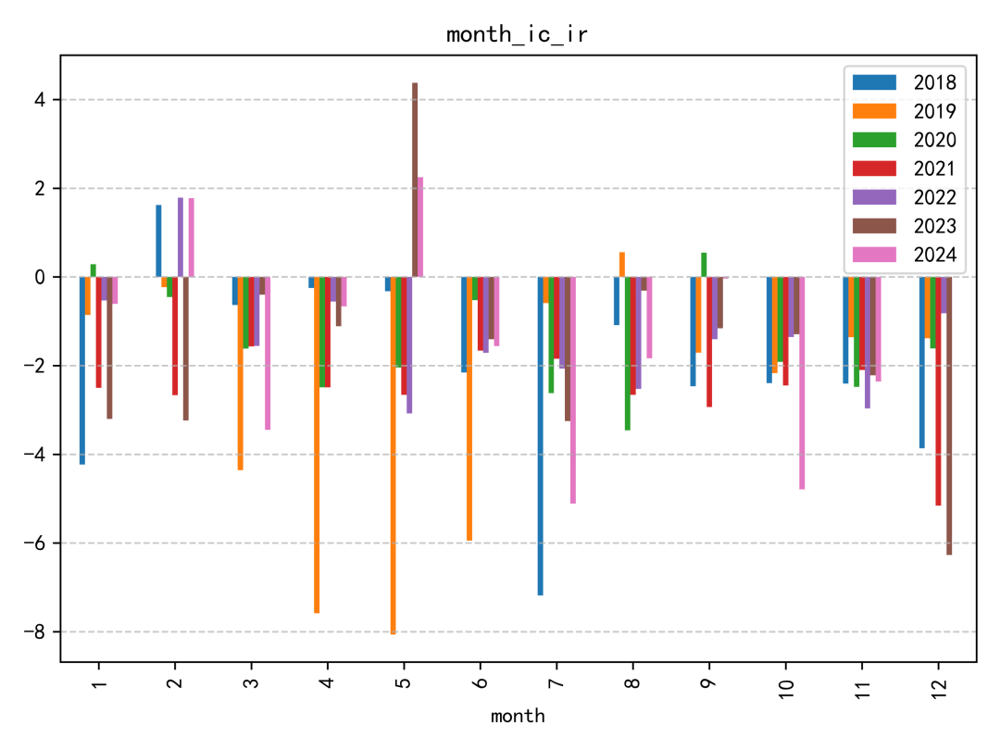
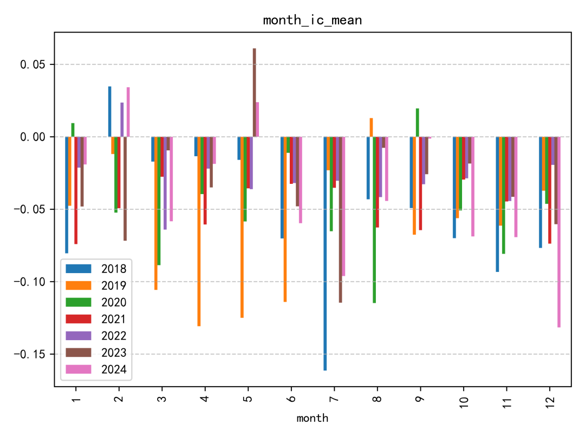
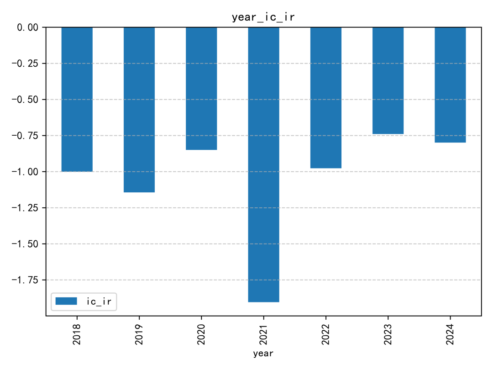
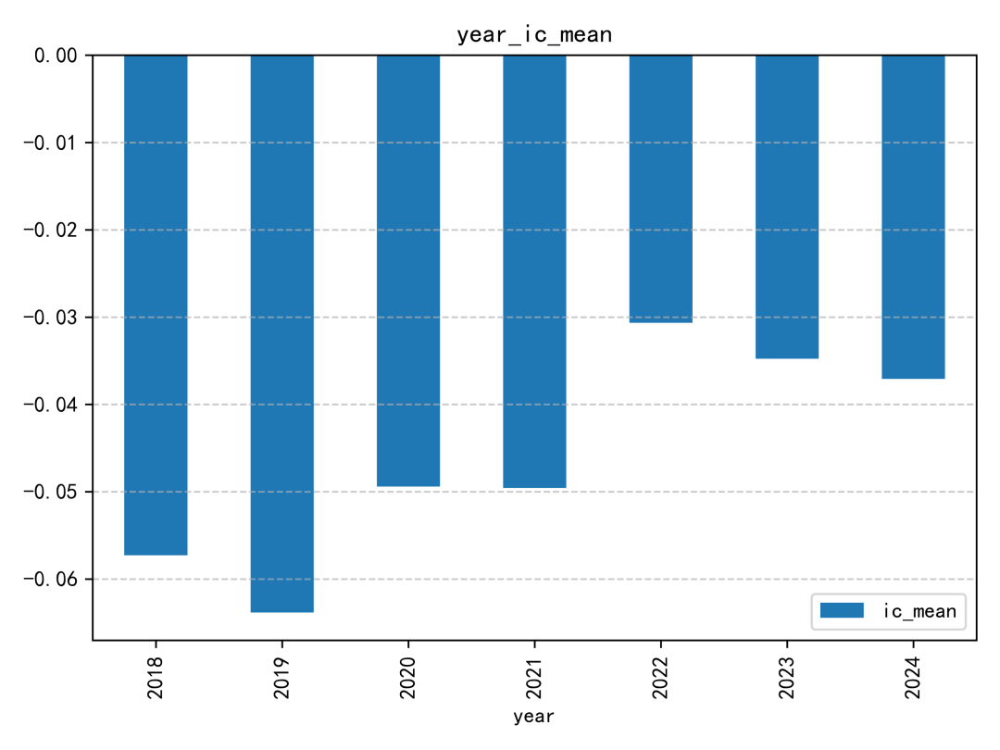
這個因子的 IC 表現整體偏普通。即使放在同一份研究報告的因子集合中，也不算特別突出；IC 絕對值超過 0.06 的年份，幾乎只有 2019 年相對明顯。
迴歸分析
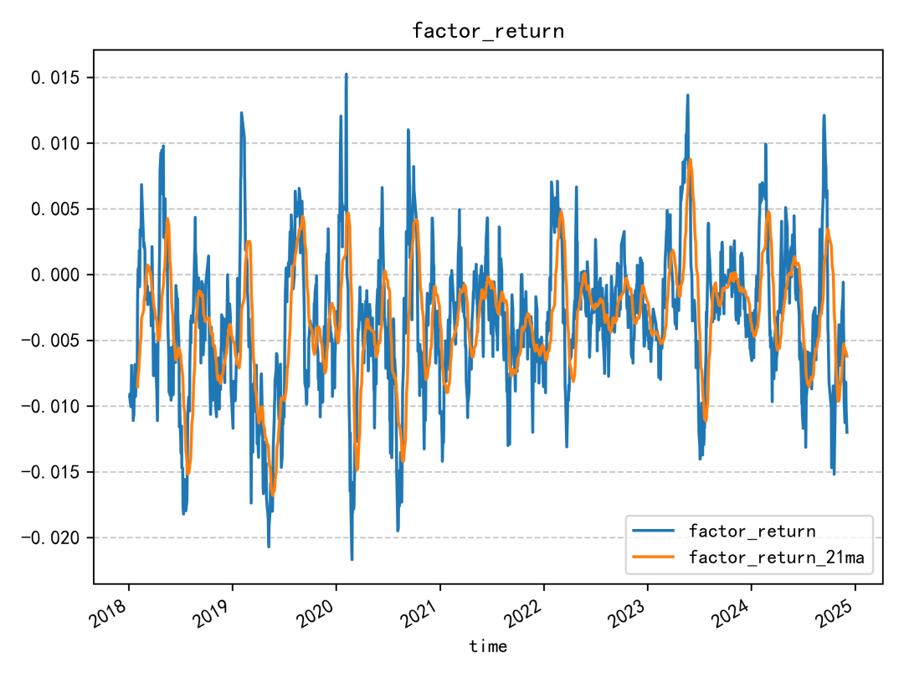
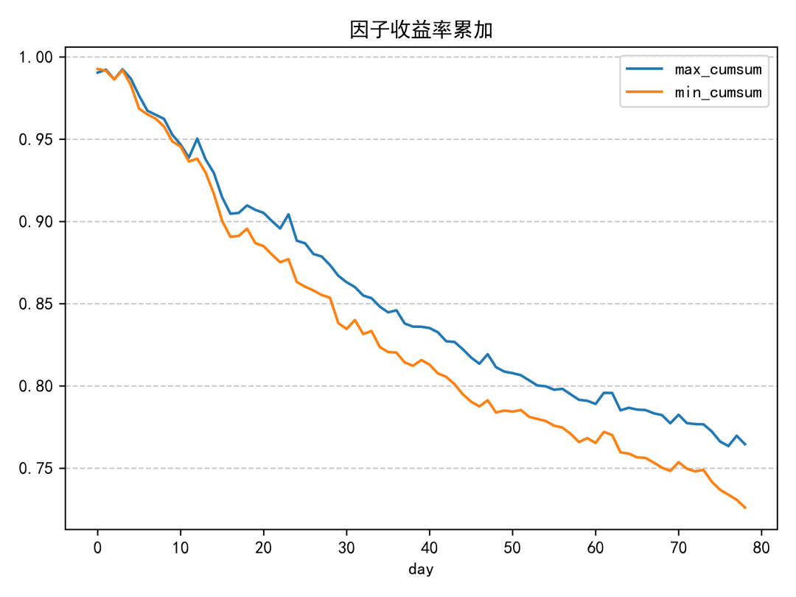
週轉率分析
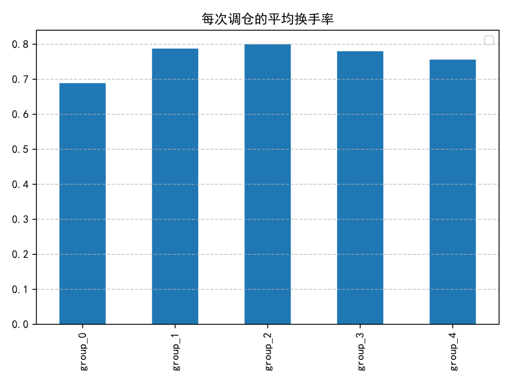
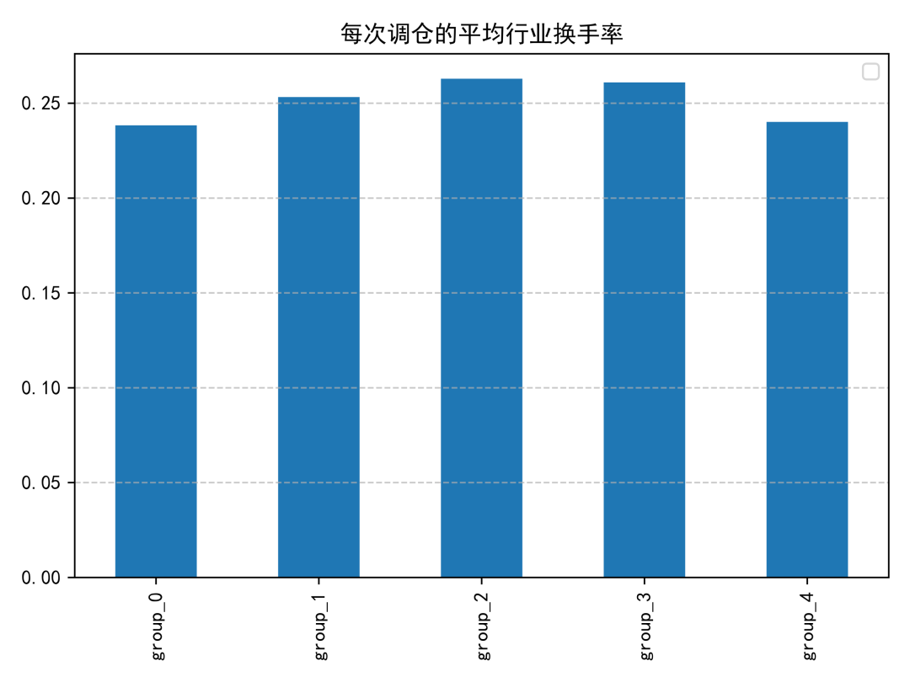
報酬分析
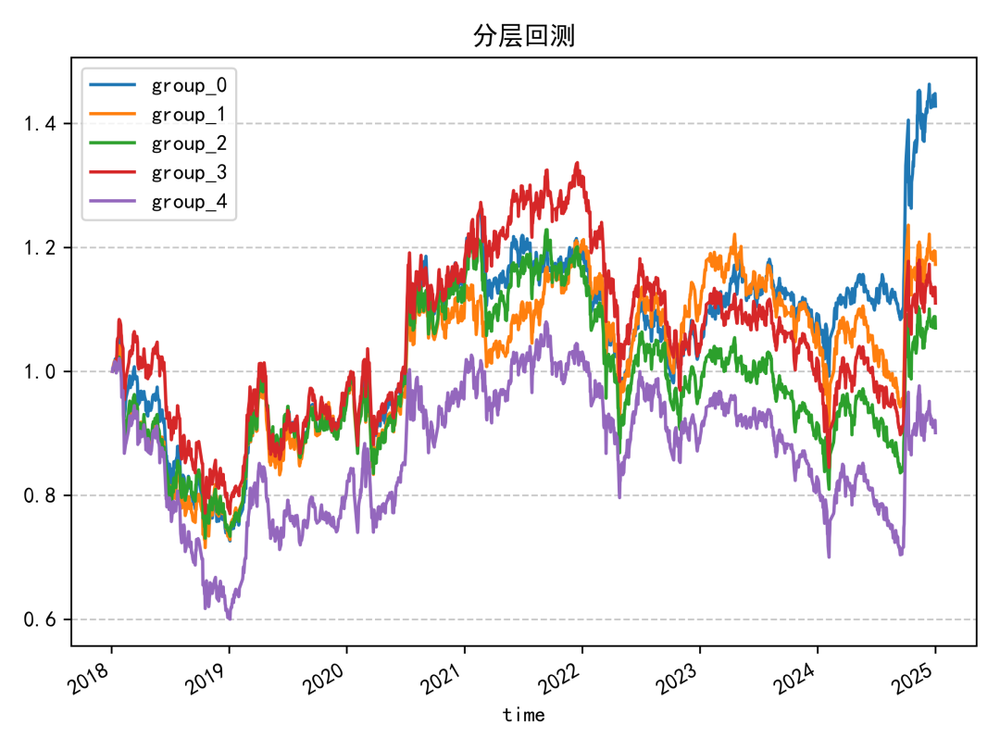
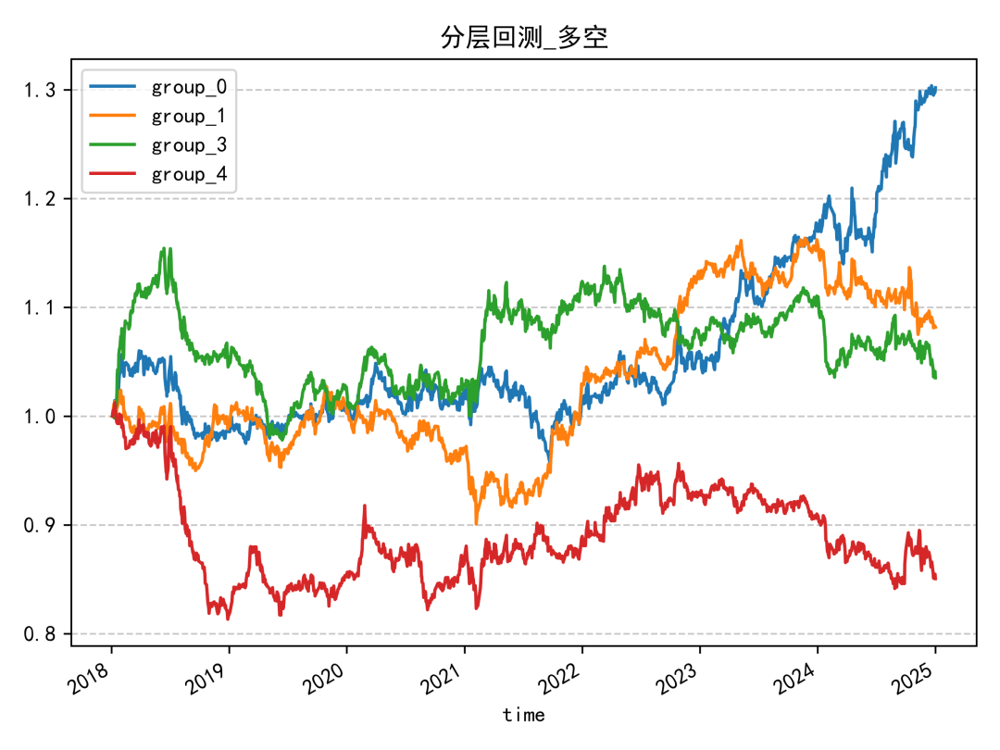
分層回測結果同樣偏中性，單調性不算理想。除了因子值最高的一組明顯落後外，其餘各組之間的區分度沒有拉得很開，代表這個因子單獨使用時的排序能力有限。
結論
成交量分桶熵的優點是概念直觀、計算流程不複雜，也容易實作成日頻因子；但從 IC、迴歸與分層回測結果來看，它比較像是可納入因子池的輔助型訊號，而不是單獨就能撐起策略的核心因子。
若要延伸使用，較合理的方向有兩個：
- 與同一篇研究報告中的其他成交量分布類因子做組合。
- 搭配流動性、波動度或事件型因子一起做橫截面排序。